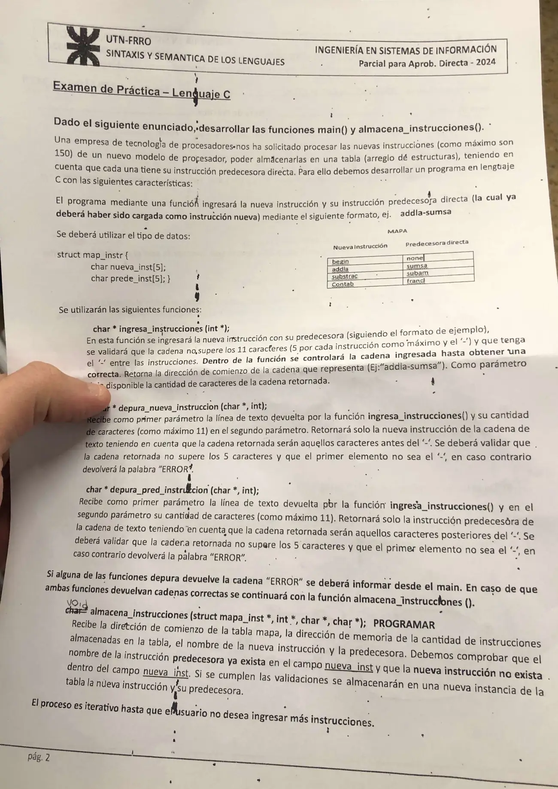

Parcial para aprobación directa, práctica, 25/06/2024
Final y aprobación directa, 25/06/2024
Enunciado


Propuesta de respuesta
Respuesta no verificada. La propuso Luta Studios con inteligencia artificial y ningún docente la revisó. Puede tener errores.
Las funciones ingresa_instrucciones, depura_nueva_instruccion y depura_pred_instruccion las da el enunciado y no se programan. El main sigue el del final del 15/12/22, que trae este mismo programa con el main escrito por la cátedra. En la hoja de 2024, el char * de almacena_instrucciones está tachado y dice void a mano, como en la de 2022.
#include <stdio.h>
#include <ctype.h>
#include <string.h>
struct map_instr {
char nueva_inst[5];
char prede_inst[5];
};
char * ingresa_instrucciones(int *);
char * depura_nueva_instruccion(char *, int);
char * depura_pred_instruccion(char *, int);
void almacena_instrucciones(struct map_instr *, int *, char *, char *);
int main() {
char * instruccion_total;
char * nueva_instruccion;
char * pred_instruccion;
int op, cant, cant_instruccion_total = 1;
struct map_instr mapa_total[150] = {{"begin", "none"}};
printf("Desea ingresar una nueva instruccion? 1 (si), 0 (no): ");
scanf("%d", &op);
fflush(stdin);
while (op == 1) {
instruccion_total = ingresa_instrucciones(&cant);
nueva_instruccion = depura_nueva_instruccion(instruccion_total, cant);
if (strcmp(nueva_instruccion, "ERROR") == 0)
printf("La nueva instruccion no cumple con los requisitos solicitados\n");
else {
pred_instruccion = depura_pred_instruccion(instruccion_total, cant);
if (strcmp(pred_instruccion, "ERROR") == 0)
printf("La instruccion predecesora no cumple con los requisitos solicitados\n");
else
almacena_instrucciones(mapa_total, &cant_instruccion_total, nueva_instruccion, pred_instruccion);
}
printf("Desea ingresar una nueva instruccion? 1 (si), 0 (no): ");
scanf("%d", &op);
fflush(stdin);
}
return 0;
}
void almacena_instrucciones(struct map_instr * mapa, int * cant, char * nueva, char * pred) {
int i, existe_pred = 0, existe_nueva = 0;
for (i = 0; i < *cant; i++) {
if (strncmp(mapa[i].nueva_inst, pred, 5) == 0)
existe_pred = 1;
if (strncmp(mapa[i].nueva_inst, nueva, 5) == 0)
existe_nueva = 1;
}
if (existe_pred == 0)
printf("La predecesora %s no esta cargada como instruccion nueva\n", pred);
else if (existe_nueva == 1)
printf("La instruccion %s ya esta en la tabla\n", nueva);
else if (*cant == 150)
printf("La tabla ya tiene 150 instrucciones\n");
else {
strncpy(mapa[*cant].nueva_inst, nueva, 5);
strncpy(mapa[*cant].prede_inst, pred, 5);
(*cant)++;
printf("Se almaceno %s con su predecesora %s\n", nueva, pred);
}
}- La tabla arranca con la fila
begin,nonedel MAPA. Sin una primera fila no se podría cargar ninguna instrucción, porque su predecesora tiene que estar ya ennueva_inst. char nueva_inst[5]no deja lugar para el'\0'de una instrucción de 5 letras, comoaddla. Por eso los campos se copian constrncpy(..., 5)y se comparan constrncmp(..., 5), que nunca pasan de 5 caracteres. En el inicializador,"begin"entra justo sin el'\0', y C lo permite.- La función recorre la tabla una vez y marca si encontró la predecesora y si la nueva ya estaba. Solo si la predecesora está y la nueva no, guarda en la posición
*cant. También controla que no pase de 150. - La cantidad llega por referencia, con
int *en el parámetro y&cant_instruccion_totalen la llamada. Por eso(*cant)++cambia la variable delmain. - Como la función es
void, los avisos de lo que no se pudo guardar salen desde adentro conprintf.
Una prueba con la tabla recién arrancada.
| Se ingresa | Qué pasa |
|---|---|
addla-begin | Se guarda, porque begin ya está |
sumsa-addla | Se guarda, porque addla ya está |
sumsa-addla | No se guarda, porque sumsa ya está |
mul-xx | No se guarda, porque xx no está como instrucción nueva |
-sumsa | El main avisa, porque depura_nueva_instruccion devuelve «ERROR» |
Respuesta no verificada. Puede tener errores.
Se armó con la página del final, sección Cómo se lee la práctica, la del 2° parcial, secciones C: estructuras, C: punteros y C: funciones, y la hoja del final del 15/12/22, de plan viejo, para la forma del main. Se compiló y se probó con versiones simples de las tres funciones que da el enunciado.
Quedó en duda: La hoja llama al tipo struct map_instr y en el prototipo struct mapa_inst. Usé map_instr en los dos lugares. strncpy y strncmp no están en la lista de funciones de la materia. Si tu comisión acepta agrandar los campos a [6], alcanza con strcpy y strcmp. Cargar begin y none antes del ciclo sale del MAPA y no está escrito en el enunciado. Las filas substrac, Contab y francl del MAPA pasan de 5 caracteres, así que las tomé solo como ejemplo de la forma de la tabla. fflush(stdin) está como en el main de 2022, y algunos compiladores lo ignoran.
¿Cómo te fue?
Marcá cada tema del examen.
- C: funcionesPaso de parámetros, en 2° parcial
- C: estructurasC: estructuras, en 2° parcial